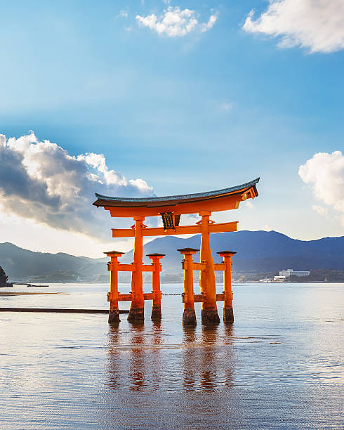

Miyajima

Miyajima is one of Japan's most beautiful destinations and home to the iconic floating gate.
Explore the most famous destinations in Hiroshima.

Miyajima is one of Japan's most beautiful destinations and home to the iconic floating gate.

The park honors the victims of the atomic bombing and promotes peace around the world.

Originally built in the 16th century, Hiroshima Castle tells the story of the city's origins.

Beautiful landscapes, bridges, ponds and seasonal flowers make this one of Hiroshima's hidden gems.

Hundreds of rabbits roam freely, making it a unique destination for visitors.